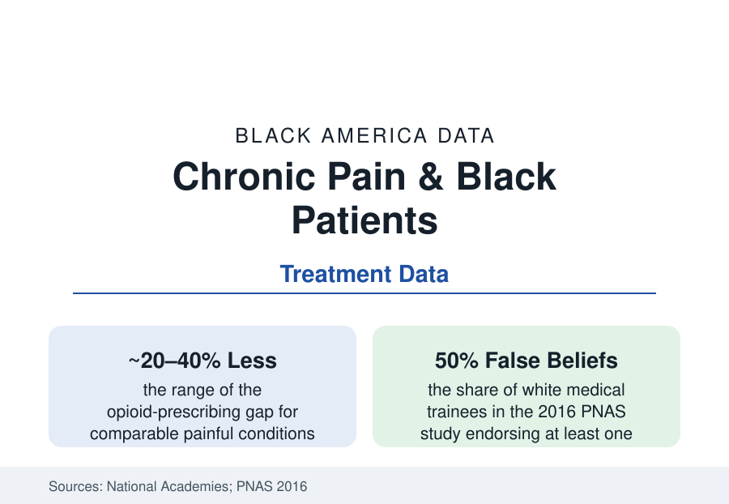

Black Public Health
Chronic Pain and Black Patients: Believed Less, Treated Less, Hurting the Same
Black patients report pain at equal rates and receive less treatment for it at nearly every measured step — from the ER's wait for a broken bone to the pharmacy counter. The evidence file.

Pain is the most common reason Americans seek care and the least objectively measurable thing they report — which makes its treatment the health system's purest test of belief. The Black patient's file on that test is among the most thoroughly documented in this section: across four decades of studies, in emergency departments and primary care, in cancer wards and sickle cell clinics, at the pharmacy counter and in the prescription database, Black patients' pain is assessed as less severe, medicated less often and at lower doses, and waited on longer than white patients' pain reported in the same words for the same conditions. This article reads the evidence.
The Emergency Department Record
The literature's founding studies are emergency-medicine's: the long-bone fracture studies (Black patients with broken arms and legs receiving no analgesia at markedly higher rates than white patients with identical injuries in the same departments — the 1990s and 2000s studies replicated across cities), the meta-analyses consolidating the pattern at roughly twenty to forty percent lower odds of opioid treatment for Black patients across painful conditions, and the wait-time data (triage categories assigned less urgent for identical presentations, the analgesia delay measured in the timestamps). Pediatric appendicitis studies extend it to children (Black children with appendicitis receiving opioids at fractions of white children's rates in the national samples). The mechanism studies complicate any simple villainy: the 2016 PNAS study of medical trainees found half endorsing at least one false biological belief (thicker skin, less sensitive nerve endings — slavery-era pseudoscience preserved in the survey responses) and those endorsements predicting lower pain ratings and less adequate treatment for Black patients in the vignettes — the study's fame earned by making the implicit measurable. The sickle cell file (this section's article) is the pattern's clinical extreme: a population defined by pain crises, meeting the system's suspicion at the exact door of its specialty.
The Prescribing Era and Its Double Edge
The opioid era layered the file: the CDC prescribing data show the epidemic's first wave flowing disproportionately through white communities (the prescribing gap functioning, in the overdose statistics' grim accounting, as partial protection — Black overdose rates ran below white rates through the epidemic's prescription phase, then converged and crossed as the drug supply shifted to heroin and fentanyl in the 2010s, the substance-use file's arc), while the correction era's instruments (prescription-drug monitoring programs, dose thresholds, insurer limits) fell unevenly in the audit studies — Black patients' prescriptions scrutinized, discontinued, and pharmacy-refused at higher rates in the documented cases (the chain-pharmacy refusal investigations, the 'drug-seeking' chart labels the NLP studies now find distributed unequally in the notes of the record itself). The legitimate-pain casualties concentrate where they always did: cancer pain (the oncology undertreatment literature's consistent racial findings, hospice enrollment and opioid access at end of life in the palliative data), post-surgical pain, and the chronic primary pain conditions (back pain above all — the claims data showing Black patients routed less often to the multidisciplinary and interventional tiers, more often to the medication-only management the guidelines rank last for chronic care).
Burden, Coping, and the System's Other Door
The burden side of the ledger is as measured as the treatment side: the national survey data show Black adults reporting chronic pain at rates comparable to or above white adults — with high-impact chronic pain (pain limiting work and life on most days) running higher in the NHIS analyses, consistent with the occupational file (the physical-labor injury and wear ledger) and the comorbidity stack — while the coping infrastructure distributes differently (the faith and family frameworks of the mental-health file; the complementary and community practices; the documented lower use of the formal pain-clinic system that requires the referral, the insurance, and the belief). The research frontier is methodological: the pain-assessment technologies (the algorithmic and biomarker measures in development, whose training data will decide whether they correct the human gradient or automate it — the eGFR lesson of the transplant file, arriving in pain medicine on schedule) and the accountability instruments (the pain-treatment equity dashboards a few systems now publish by race — the measurement itself the reform, as ever in this section).
Reading the Pain Data
Same fractures, same words, less medicine: the pain file needs no embellishment and this article offers none. Pain treatment is where the healthcare system grades its own belief in a patient's report, and the grades are published, replicated, and four decades deep. The trainees who endorsed the false beliefs were not villains in a morality play; they were the system working as it was taught. The data's demand is the re-teaching — and the dashboard that proves it happened.
More in Black Public Health
Hypertension Among Black Adults: Prevalence, Control, and Consequences
About 55 percent of Black adults have hypertension — the highest rate of any U.S. group. Prevalence, onset, control, and the stroke, heart, and kidney consequences in the data.
Diabetes Among Black Adults: Prevalence and Complications
Nearly one in five Black adults has diabetes, diagnosed or undiagnosed — and its complications fall with particular weight. The CDC data on prevalence, control, and outcomes.
Black Life Expectancy: The Gap at Birth and Its Causes
Black life expectancy at birth is about 73 years, roughly five years below the national figure — the summary measure of every health gap in this section. The CDC data.
Source: National Academies of Sciences, Engineering, and Medicine; Agency for Healthcare Research and Quality; JAMA and Annals of Emergency Medicine study literature; CDC prescribing data analyses.